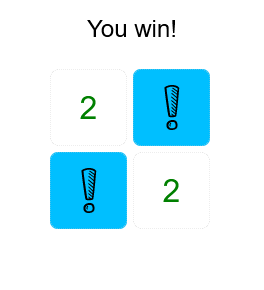
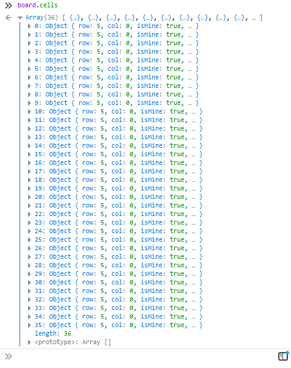
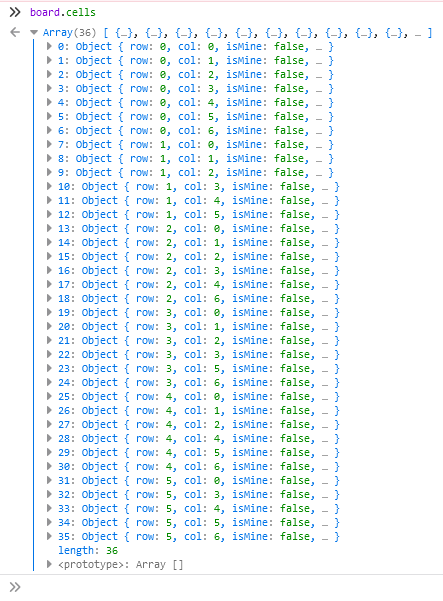
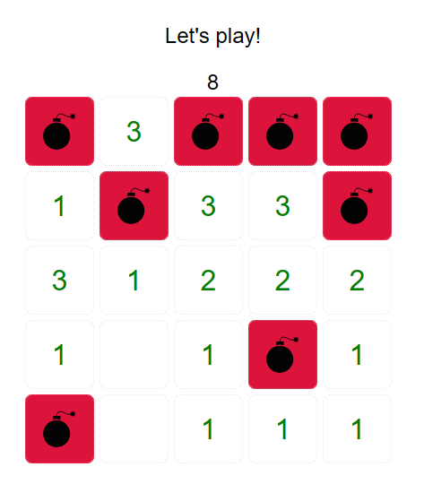
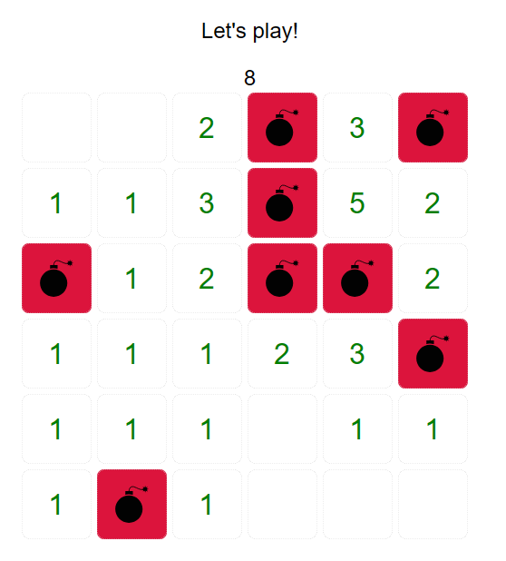

Minesweeper
This challenge was to write minesweeper. We already had a skeleton code
base and set of tests to get us started, our job was to bring everything
together, following a set of instructions to create a board that contained
some mines, showed the number of surrounding mines when a cell was revealed
and a winning condition that told the player if they won. In other words.

figure 1
Mine counter
Once the basic prototype was working, I then extended the project. Adding a
score card from scratch. The goal was to present the total number of mines
on the field to the player. When the player flagged a cell, it took one
away from the score. If the score goes into the negative, that tells the
player they have used too many flags. And have missed a spot. If a player
released a cell it added one back to the score.
First I needed a starting point. That told the player how many mines were
active on the field. To do this it had to find then print the total number
of mines to the screen.
I realised that the number of mines was information that I needed for both
starting and updating the score. Instead of repeating the same code
multiple times, it made sense to set it up in its own function.
getNumberOfMines became the next function, and that counted the total
number of mines and returned the result.
The other common task was printing the score. This became the next function
which meant adding another element to the html code and css.
The final task was to update the score. This started with the total number
of mines, then looped through the array of cells and subtracted 1 each time
a cell was marked. It then printed this updated score to the screen.
So far the hardest part of the challenge was setting up the board with a
set of cells in a way that passed the pre-existing tests, spending more
time then I’d care to admit going around in circles trying to get the tests
to pass.
Automatically generated game board
The prototype was limited to a board size of 36 cells. I wanted my game to
represent a beginner board, which is an 8 * 8 board (64 cells) with 10
mines. First step was to modify the test so that the number of cells was
64. We’ll see if that breaks the game later on.
Where to start? I know I have a board which has rows and columns. I know
the size I want to start with, as stated above is an 8*8 board. I also know
that I have a sequence of cells that are represented as objects. I know the
properties are:
row
column
isMine
isMarked
hidden
I also want the difficulty level to be easily expandable, and the mines to
be randomly placed.
first would make sense to have a main function for the feature. Since we
are generating a game board ill call this setUpGameBoard, and it will take
rows and columns as its input.
For now this will work out the board size by multiplying the rows and
columns
RangeError: invalid array length. Ok maybe keep the board size to 36 for
now.
Next step create an array of cells. Simple enough, just use a standard for
loop and create a sequence of objects to the size of the board we worked
out in our setup function, assigning the property’s above. Cool, easy
enough – Also works nicely as a function which I’ll call initCells, because
we are initializing the cells.
A console.log shows that everything has been initialized as expected.
Now to assign the grid positions, using the row and column size we selected
when calling the setUpGameBoard function. Loop through the array of cells,
assigning repeating incrementing number of rows to the row property and….

figure 2
figure 3
After going around in circles for an hour. That’s enough for now.
Got it working. What I needed to do is to increment the row number only
when that number of rows had been assigned. To do this I implemented a
counter that kept track of the current row. Then if the loop index was
divisible by the row number and greater then 0, then it would increment
current row counter. Without the greater then 0 clause the first time it
went through it would read that 0, divisible by rows was 0, so was
incrementing early. Maybe not the most eloquent solution, but it works, and
that’s good enough for now.
Now onto assigning the columns. To do this I need to increment through each
column by 1, assigning this value to the cell. When the counter reaches the
column size it resets.
Slightly different strategy to assigning the rows. I had a counter, and I
looped through the cells. I assigned the counter to the current cell. Each
time the loop ran through I incremented the cell until it was equal to the
column, then I reset it. Worked smoothly.

figure 4
(Notice something off about this result? back to that later)
Set mine positions
Final Stage: assign 10 mines to random positions in the grid so that no two games are the same.
Hmmm. I need to generate sets of coordinates within the grid size, and then, using
them as a cross reference assign the 10 mines to them. How to do this?
Time to sleep on it.
Lesson for today. Write down what you are trying to do. If you can do that
and understand it. The hard parts done, and you are not far off getting it
into working code.
Talk about over complicating things. Don’t need to bother with coordinates
at all. Each cell has an index number. So, if I can create a sequence of
random numbers, that is the number of mines I want to have on the board. I
can then cross reference them to the list of cells, and make the
correlating cells mines. I can then easily adjust the number of mines on
the board by changing the list size.
Ok. But what happens when two or more numbers are the same numbers? Those
numbers would lessen the mines on the field. Therefor each number has to be
unique, between 0 and the board size.
Getting the random numbers is a straight forward affair, using the random
numbers. The tricky part is making them unique in a way that’s not too over
complicated.
After taking with some of the guys on my course, some google-fu and some
failed experiments. I found a nice way to generate a sequence of unique
random numbers. Just found out about the includes array function in
JavaScript. This nifty function returns true if an array contains a
specified element.
what I can do is loop while the number of mine positions is less then the
set amount. Then create a random number between the range I talked about
earlier, test to see if that number is not in the array and if it isn’t
push it to the back of the array.
Finally loop through the sequence of positions, and assign the correlating
cells to mines. hooray.

figure 5
Debugging
Not so fast, a little premature on the celebration. The mines are being
placed correctly, resetting each game but notice something wrong? The
numbers of surrounding mines are not accurate. Hmmmm.
Remember how I “solved” the rows and columns using two functions? Those
functions are not working properly. Look back to figure 3. The eagle eyed
among you might have seen what I missed earlier on. An extra row at the
start of the sequence and 1 short at the end of the sequence. This is what
is throwing off the surrounding mines, as that is based on the rows and
columns.
After asking for help, and discussing things with some of the guys in my
course who have also done it got the final piece of the puzzle from one of
the facilitators. A nested loop (loop in a loop) with the rows being
indexed by the outer loop and the columns being indexed by the inner loop.
The difference. When I tried to implement this earlier, I used the
assignment operator. They used the array push method. This also brought 3
different functions back into one function.

Hooray, the game is working properly. It was an adventure for sure. Biggest
take away: way easier to work out and organize logic on paper first. Then
to jump straight into coding and try and figure our why its not working
after.